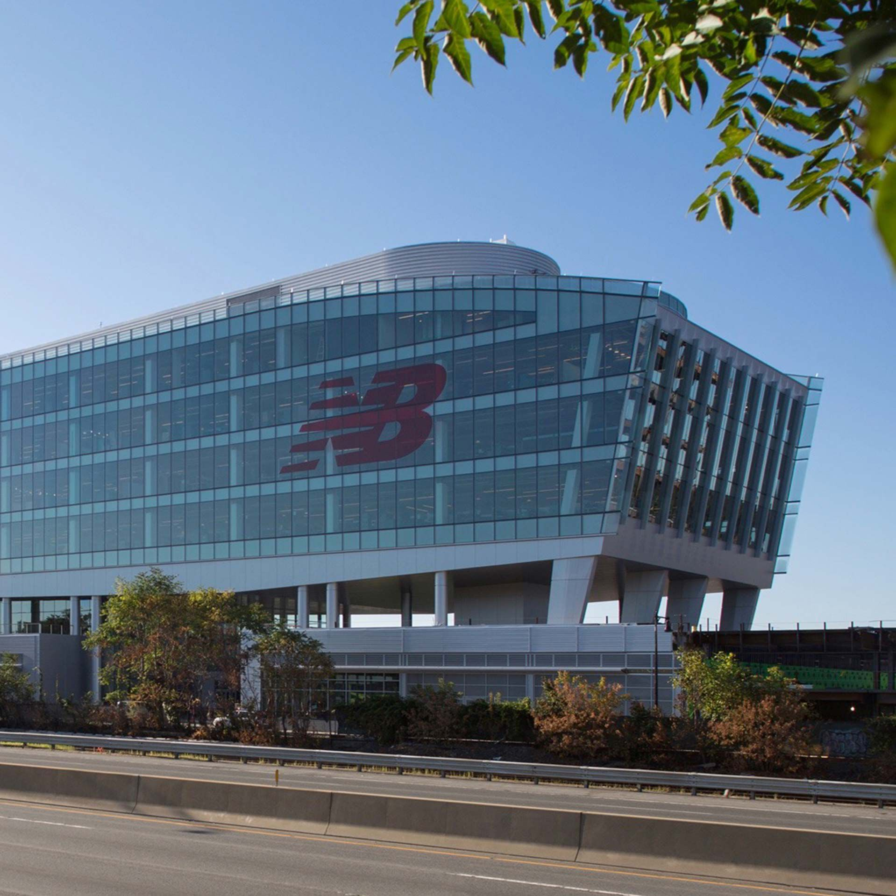

Surtout spécialisée dans les chaussures de course à pied, aujourd'hui New Balance est la quatrième marque mondiale de chaussures de sport et elle est la seule à fabriquer des chaussures en Occident.
New Balance, quatrième fabricant américain, produit toujours aux États-Unis. La société possède cinq usines, en Nouvelle-Angleterre, et y emploie 2 600 salariés.
Best sellers: LES 550 !
Historique de la marque :
- 1906 :
La marque a été fondée à Boston, par un immigrant anglais nommé William J. Riley rejoint par la suite par Arthur Hall
- 1972 :
James (Jim) S. Davis, dont la fortune est estimée à 1,8 milliard de dollars en 2011.
- 2011 :
Les ouvriers chinois se mettent en grève pour protester contre des licenciements abusifs, des mauvais traitements et un projet de délocalisation
- 2013 :
La marque fait évoluer sa stratégie marketing en décidant de sponsoriser la nouvelle jeune star du tennis canadien Milos Raonic.